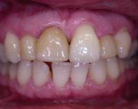
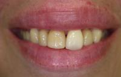

Periodontal Therapy to Treat Infections
Reducing bone loss that causes a pocket around tooth and eliminating the bacteria associated with this disease are important to prevent further damage and maintain a healthy smile. Eliminating bacteria alone may not be sufficient to prevent disease recurrence because deep pockets will permit them to return. Deeper pockets are more difficult for you and your dental care professional to clean, so it's important for you to reduce them. Reduced pockets and a combination of daily oral hygiene and professional maintenance care increases your chances of keeping your natural teeth - and decreases the chance of serious health problems associated with periodontal disease.
There are many approaches to treating the ravages of this infection. They range from non-surgical therapy to regenerating the bone you have lost.
Don't wait to control your periodontal disease. Dr. Goteiner and his caring staff will be happy to meet with you to review your treatment options for a beautiful, functional smile that will last a lifetime.
Non-Surgical Periodontal Therapy: Our Philosophy
We can use modern techniques to help rebuild lost bone support. The emphasis in Dr. Goteiner’s practice is conservative periodontal therapy. Our hygienists (Jill Del Gaizo and Melinda Anen) have advanced periodontal skills to achieve the highest level of care for their patients. They will also include a personalized program of care to maintain your healthy gums and smile. By exercising proper home care and having frequent periodontal maintenance treatments, we will help protect your periodontal health.
Root Planning
Many times, the early stages of periodontal disease are best treated with non-surgical periodontal therapy. This usually consists of placing a fine ultrasonic tip in between the tooth and gum tissue to remove any plaque and calculus below the gum line. This procedure is called root planing. Four to six weeks later, periodontal pockets are eliminated due to gum shrinkage. Then the patient can personally maintain these areas with routine brushing and flossing.
Even in most severe cases of periodontal disease, non-surgical periodontal therapy most often precedes surgical therapy. This is done so that the overall tissue quality is improved prior to surgery and also limits the areas of required surgery.
Root Coverage
| Before | After |
|---|---|
|  | |
|  | |
Periodontal And Restorative Solutions
To Assist the General Dentist
Regeneration
The main cause of periodontal disease is bacteria in the form of a sticky, colorless plaque that constantly forms on your teeth.
Your bone and gum tissue should fit snugly around your teeth like a turtleneck around your neck. When you have periodontal disease, this supporting tissue and bone is destroyed and pockets develop. Eventually too much bone is lost and the teeth will need to be extracted.
If you have already lost too much bone, Dr. Goteiner may recommend a regenerative procedure when the bone supporting your teeth has been destroyed. These procedures can reverse some of the damage by regenerating lost bone and tissue.
During this procedure, Dr. Goteiner folds back the gum tissue and removes the disease-causing bacteria. Membranes (filters), bone grafts or tissue- stimulating proteins can be used to encourage your body's natural ability to regenerate bone and tissue.
There are many options to enhance support for your teeth and to restore your bone to a healthy level. Dr. Goteiner and his staff will discuss your best options with you.
Crown Lengthening
Functional Crown Lengthening: A tooth which is broken or decayed below the gum line is difficult, if not impossible, for your dentist to restore correctly, as access and visualization of the area is compromised. In addition, even the best filling or cap will trap bacteria where the restoration meets he tooth. If his area is below the gum line where you cannot properly clean it, the bacterial accumulation results in both periodontal problems and the formation of a new cavity at the base of the filling.
A crown lengthening procedure, which reshapes the gum and supporting issues, will solve theses problems. This will allow a final restoration to be placed in a healthy environment
Cosmetic Crown Lengthening: On occasion your dentist may require reshaping your gums to create symmetry in your smile, or to reduce a gummy smile or event expose more of your tooth to create a tooth hat looks more natural with your face and smile.
Whether you have crown lengthening to improve function or esthetics, patients often receive the benefits of both: a beautiful new smile and improved periodontal health - your keys to smiling, eating and speaking with comfort and confidence.
Cosmetic Crown Lengthening
| Before | After |
|---|---|
 |
|
Soft Tissues Grafting
Soft tissue grafts can be used to cover roots or develop gum tissue where it is absent due to excessive gingival recession. During this procedure, Dr. Goteiner takes gum tissue from your palate or another donor source to cover the exposed root. This can be done for one tooth or several teeth to even your gum line and reduce sensitivity. A soft tissue graft can reduce further recession and bone loss. In some cases, it can cover exposed roots to protect them from decay. This may reduce tooth sensitivity and improve esthetics of your smile.
Regrowing Your Lost Bone:
Guided Tissue and Bone Regeneration
In the past, the treatment of periodontal (gum) disease was considered to be painful and disfiguring. For many years, the best way to achieve the ultimate goal of therapy (shallow, maintainable pockets) was to do resective surgical procedures that often resulted in the exposure of sensitive root surfaces and the appearance of "long" teeth.
Today, periodontists are often able to restore or regenerate missing bone and attachment around teeth subjected to long-standing periodontal disease. In addition, if you have lost a tooth due to trauma or disease, we can restore or regenerate bone prior to the placement of bridges or implants.
Guided tissue regeneration (GTR) refers to procedures that attempt to regenerate lost periodontal structures (bone, periodontal ligament, and connective tissue attachment) that support our teeth. This is accomplished using biocompatible membranes, often in combination with bone grafts and/or tissue stimulating proteins.
Guided Bone regeneration (GBR) refers to procedures that attempt to regenerate bone prior to the placement of bridges and implants. This is accomplished using bone grafts and biocompatible membranes that keep out tissue and allow the bone to grow.
Dental Implants to Replace Missing Teeth
You may be missing one or more teeth as a result of periodontal disease or trauma. Perhaps that adult tooth may never have come in. You know that your confidence about your teeth affects how you feel about yourself, both personally and professionally. Perhaps you hide your smile because of spaces from missing teeth. Maybe your dentures don't feel secure. Perhaps you have difficulty chewing. If you are missing one or more teeth and would like to smile, speak and eat again with comfort and confidence, there is good news! Dental implants are teeth that can look and feel just like your own! Under proper conditions, such as placement by Dr. Goteiner and diligent patient maintenance, implants can last a lifetime.
What Dental Implants Can Do?
Replacing A Single Tooth
A dental implant provides several advantages over tooth replacement options. In addition to looking and function like a natural tooth, a dental implant replaces a single tooth without sacrificing the health of neighboring teeth. The other common treatment for the loss of a single tooth, a tooth supported fixed bridge, requires that adjacent teeth be ground down to support the cemented bridge.
Because a dental implant will replace your tooth root, the bone is better preserved. With a bridge, some of the bone that previously surrounded the tooth begins to resorb (deteriorate). Dental implants integrate with your jawbone, helping to keep the bone healthy and intact.
In the long term, A single implant can be more esthetic and easier to keep clean than a bridge. Gums can recede around a bridge, leaving a visible defect when the metal base or collar of the bridge becomes exposed. Resorbed bone beneath the bridge can lead to an unattractive smile. Another concern is the cement holding the bridge in place can wash out allowing bacteria to decay the teeth that anchor the bridge.
Replacing Several Teeth
Dental implants provide several advantages over other teeth replacement options. In addition to looking and functioning like natural teeth, implant supportrd bridges replace teeth without from adjacent natural teeth. Other common treatments for the loss of several teeth, such as fixed bridges or removable partial dentures, are dependent on support from adjacent teeth.
In addition, because implant-supported bridges will replace some of your tooth roots, your bone is better preserved. With a fixed bridge or removable partial denture, the bone that surrounded the tooth root may begin to resorb (deteriorate). Dental implants integrate with your jawbone, helping to keep the bone healthy and intact.
In the long term, implants are esthetic, functional and comfortable. Gums and bone can recede around a fixed bridge or removable partial denture, leaving a visible defect. Resorbed bone beneath bridges or removable partial denture can lead to a collapsed, unattractive smile. Another concern is the cement holding the bridge in place can wash out allowing bacteria to decay the teeth that anchor the bridge. In addition, removable partial dentures can move around in the mouth and reduce your ability to eat certain foods.
Replacing All Of Your Teeth
Dental implants provide several advantages over other teeth replacement options. In addition to looking and functioning like natural teeth, implant supported full bridges or dentures are designed to be long lasting. Implant-supported full bridges also are more comfortable and stable than conventional dentures, allowing you to retain a more natural biting and chewing capacity.
In addition, because implant supported full bridged and dentures will replace some of your tooth roots your bone is better preserved. With conventional dentures, the bone that previously surrounded the tooth roots begins to resorb (deteriorate). Dental implants integrate with your jawbone, helping to keep the bone healthy and intact.
In the long term, implants can be more esthetic and easier to maintain than conventional dentures. The loss of bone that accompanies conventionsl dentures leads to recession of the jawbone and a collapsed, unattractive smile. Conventional dentures make it difficult to eat certain foods.
See us for consultation to see if you are a candidate for implant dentistry. Dr. Goteiner works closely in conjunction with your restorative dentist for the most aesthetic, functional result.
Sinus Augmentation
On occasion you may require extra bone to place an implant in the molar area of your upper teeth. Besides that traditional Caldwell-Luck procedure this office uses the much more conservative and less traumatic Summer’s osteotome technique. With the Summer’s technique the implant can be placed 4 months after the procedure.

Ridge Augmentation and Expansion
This technique is used to add bone to both the upper and lower jaw so that the implant can be properly place. It also can assist in getting rid of that "sunken look" that often occurs after you have lost teeth.

Immediate Load Implants
On occasion we can extract a broken tooth, place the implant and cap (crown) all in the same visit. In this way the is no need to wear any type of removable appliance while waiting to get your final crown
See us for consultation to see if you are a candidate for an immediately loaded implant. Dr. Goteiner works closely in conjunction with your restorative dentist for the most aesthetic, functional result.
Cosmetic and Gum Enhancement Procedures
In addition to procedures to procedures to treat periodontal disease, we also perform cosmetic procedures to enhance your smile. We strive to work in close contact with your restorative dentist to get the result you want.
Oftentimes, patients who pursue cosmetic procedures notice improved function as well. Cosmetic procedures include:

Crown Lengthening
Many people with a "gummy smile" often believe it is because they have short teeth. On the contrary, you may have pearly white tooth structure underneath an overgrowth of gum tissue. Dr. Goteiner has performed hundreds of atraumatic procedures to help people show a beautiful smile.
Soft Tissue Grafting
There are instances where your smile is affected because of receding gum. They make your teeth appear too long. Your gums may have receded for a variety of reasons, including aggressive tooth brushing or even periodontal (gum) disease. Dr. Goteiner has expertise in this area. Not only can we restore the smile both surgically and none surgically, we will give you the tools to prevent damage in the future. Besides restoring a healthy smile it will decrease sensitivity caused by recession.
Ridge Augmentation and Socket Preservation
Sometimes when you lose one or more teeth, you can get an indentation in your gums and jawbone where the tooth used to be. This happens because the jawbone recedes when it no longer is holding a tooth in place,
Not only is this indentation unnatural looking, it also causes the replacement tooth to look too long compared to the adjacent teeth. Dr. Goteiner can fill these "defects" with a procedure called ridge augmentation. We can recapture the natural contour and color of your gums and jaw. When the new tooth is created it will be natural looking, easier to clean and beautiful.
Call to schedule a smile consultation. After evaluation of your smile we can provide you a range of treatments available to achieve the look you want that is both beautiful and long lasting.
Oral Pathology and Oral Medicine
Dr. Goteiner’s fellowship also included training in oral medicine. Presently he is the oral medicine advisor for the Morris Study Club and holds a dual appointment at the University of Medicine and dentistry of New Jersey (One in the Department of Periodontics and the other in the Division of Oral Medicine in the Department of Oral Biology).
The inside of the mouth is normally lined with a special type of skin (mucosa) that is smooth and coral pink in color. In addition, each tooth is surrounded by a collar of tissue containing a specific fluid. Any alteration of the tissue appearance or fluid chemistry could be a warning sign for a pathological process. Dr. Goteiner uses the latest diagnostic tools such as DNA probe, microbiological testing, brush biopsy and immunofluorescence to identify the infection and the disease process. Such information provides relevant information on the antimicrobial susceptibility profile of the pathogens and diagnose disease that on occasion appear first in the mouth.
The most serious threat to our patients is oral cancer.
The following can be signs of the beginning of a pathologic process or cancerous growth:
These changes can be detected on the lips, cheeks, palate, gum tissue around the teeth, tongue, face, and/or neck. Pain is not always necessary to define a pathology. In order to properly diagnose these conditions, a thorough medical history must be taken, including a review of all of your medications.
Following a complete examination, certain laboratory tests may be required as well as a small tissue biopsy, which can be examined under a microscope. Since many of these diseases look similar clinically, the biopsy is often the most critical factor in a proper diagnosis.
Sleep Apnea and Snoring
If you find that surgical procedures or CPAP is not improving the quality of a night’s sleep. With a referral from your physician, Dr. Goteiner will be glad to review and recommend an appliance that will help you get a good nights sleep
Snoring and sleep apnea is a serious problem for millions. It is linked o hight blood pressure, strokes and even cardiac arrest. Snoring can also be disruptive to personal and family life.
If you find that surgical procedures or CPAP is not improving the quality of a night’s sleep. With a referral from your physician, Dr. Goteiner will be glad to review and recommend an appliance that will help you get a good nights sleep.
The sleep appliance is worn only at night and is made of acrylic for patient comfort and retention. It moves the lower jaw and tongue slightly forward to open up the airway and prevent snoring and apnea. This is a safe, effective and painless way to treat persons who snore and those with mild to moderate obstructive sleep apnea.
{kind=link}
{kind=link}
{kind=link}